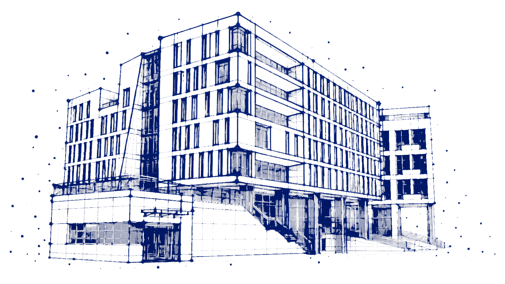
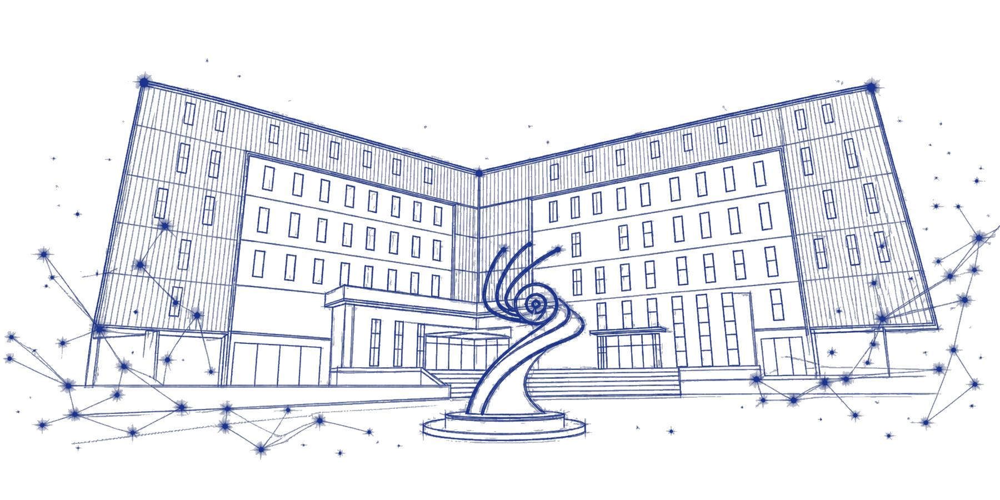
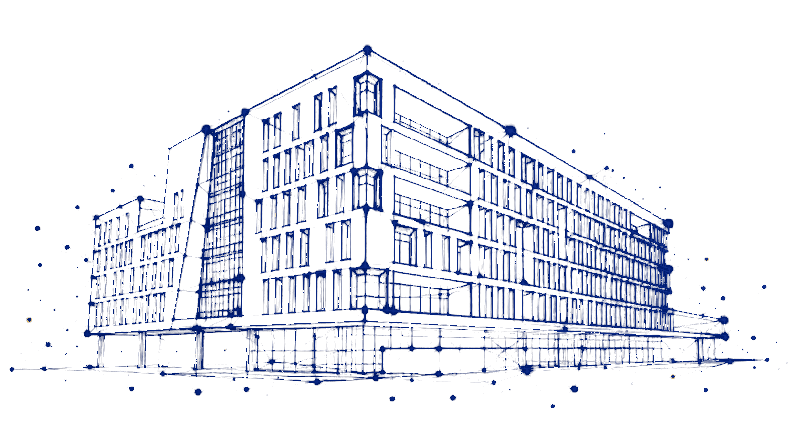
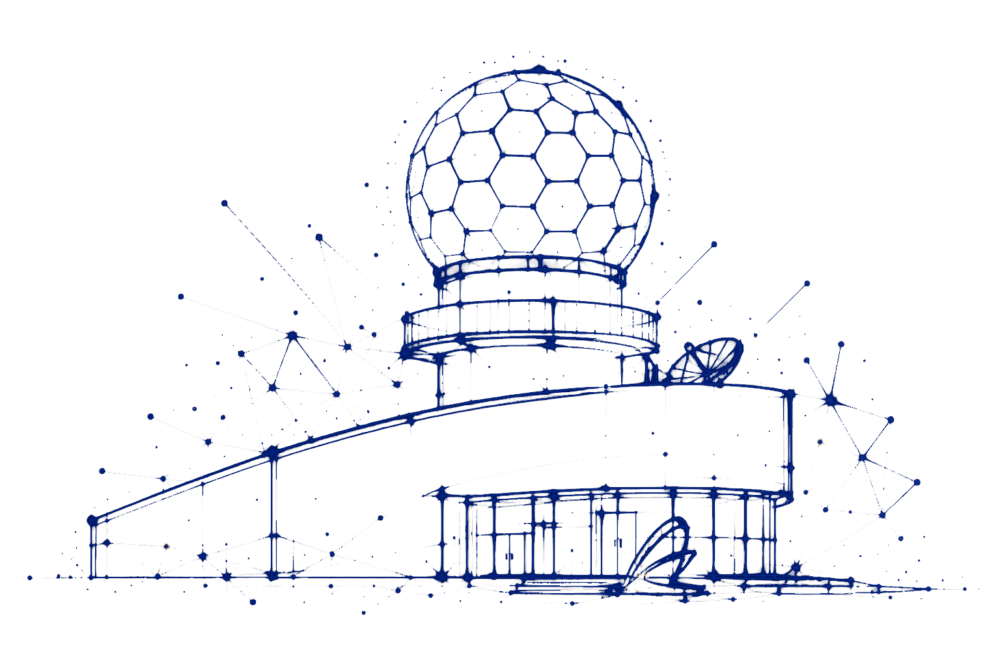
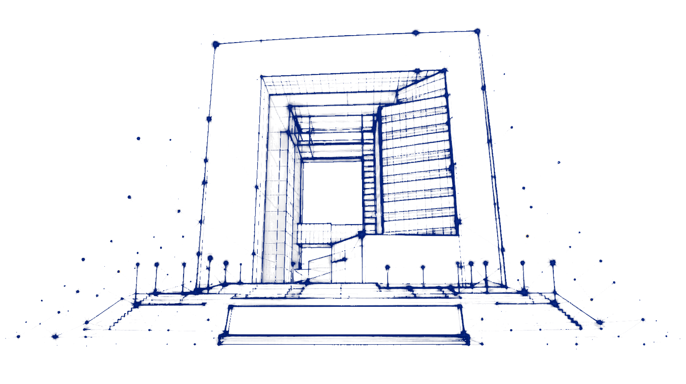

高性能与云计算研究所
青海大学高性能与云计算研究所（HPACC）致力于高性能计算、云计算、大数据分析及人工智能等前沿技术的研究与应用。我们拥有一支充满活力、勇于创新的科研团队，在分布式系统、并行算法、数据挖掘等领域取得了显著成果。
高性能计算
指通常使用很多处理器或某一集群中组织的几台计算机的计算系统和环境。
高性能计算（High performance computing）指通常使用很多处理器（作为单个机器的一部分）或者某一集群中组织的几台计算机（作为单个计算资源操作）的计算系统和环境。高性能集群上运行的应用程序一般使用并行算法，把一个大的普通问题根据一定的规则分为许多小的子问题，在集群内的不同节点上进行计算，而这些小问题的处理结果，经过处理可合并为原问题的最终结果。
高性能集群在计算过程中，各节点是协同工作的，它们分别处理大问题的一部分，并在处理中根据需要进行数据交换，各节点的处理结果都是最终结果的一部分。高性能集群的处理能力与集群的规模成正比，是集群内各节点处理能力之和，但这种集群一般没有高可用性。
高性能计算机典型的应用领域有：气象预报——借助超级计算机能够模拟复杂的气流、洋流变化；计算化学——研究原子和分子尺度的小分子体系的行为和相互作用；以及流体力学、地质模拟等大型科学计算领域和人工智能的一些领域。

图计算系统
处理大规模图数据的专用计算系统，用于社交网络分析、知识图谱、推荐系统等领域。
图是一种重要的数据结构，它能充分表达自然界中事物的联系和依赖属性，在计算机领域中广泛应用。近年来随着 Web 2.0、大数据、社交网络、机器学习和数据挖掘等技术的高速发展，很多领域抽象出来的图规模呈指数级增长，图中边的数量可达亿万级别，给图计算带来了巨大挑战。
研究图计算高效处理大规模图数据，能推动社交网络分析、语义 Web 分析、生物信息网络分析、自然语言处理和机器学习等新兴应用领域的发展。应用领域包括：流量图（监控道路事故、分析网络安全），生物图（研究药物模型），社交图（舆情分析、推荐系统）等。
现有图处理系统可分为单机内存图处理系统、单机核外图处理系统、分布式内存图处理系统、分布式核外图处理系统。图算法则分为以遍历为中心的算法（BFS、DFS、SSSP 等）和以计算为中心的算法（PageRank、Triangle Count 等）。

深度学习
机器学习领域中的新研究方向，使机器更接近于人工智能的最初目标。
深度学习（DL, Deep Learning）是机器学习（ML, Machine Learning）领域中一个新的研究方向，它被引入机器学习使其更接近于最初的目标——人工智能（AI）。
深度学习是学习样本数据的内在规律和表示层次，这些学习过程中获得的信息对诸如文字、图像和声音等数据的解释有很大的帮助。它的最终目标是让机器能够像人一样具有分析学习能力，能够识别文字、图像和声音等数据。深度学习是一个复杂的机器学习算法，在语音和图像识别方面取得的效果，远远超过先前相关技术。
深度学习在搜索技术、数据挖掘、机器翻译、自然语言处理、多媒体学习、语音、推荐和个性化技术以及其他相关领域都取得了很多成果，使得人工智能相关技术取得了很大进步。

计算机视觉
人工智能的重要分支，致力于使计算机能够理解和分析图像及视频内容。
计算机视觉技术模拟人类或者其他生物视觉，将捕捉到的图像中的数据及信息进行分析识别、检测、跟踪等，真正去识别和理解这些图像。目前此项技术已经广泛应用到安防、自动驾驶、医疗、消费等，也是目前人工智能技术中落地最广的技术之一。
未来趋势：随着 5G 带来低延迟、超高速、超大带宽，将加速推动计算机视觉在医疗、自动驾驶等行业的应用。随着技术发展，大量影像数据的保护也将成为关注重点。在未来，计算机视觉技术将越来越多地以各种形式进入人们日常生活，如人脸识别支付、购物图片识别等。

绿色计算
本着对环境负责的原则使用计算机及相关资源，提高能效比，减少碳排放。
绿色计算（green computing）是本着对环境负责的原则使用计算机及相关资源的行为。绿色计算包括采用高效节能的中央处理器（CPU）、服务器和外围设备，减少资源消耗，妥善处理电子垃圾（e-waste）。
在美国率先踏上绿色计算之路的是被称为能源之星（Energy Star）的自愿性标签授予计划。该活动由美国环境保护署于 1992 年提出，旨在提高各类硬件的使用效率。
主要研究包括：通过采集数据中心的各方面数据，全方位考虑因素，设计出高效智能节能的方案，推动绿色数据中心建设和可持续算力服务。
